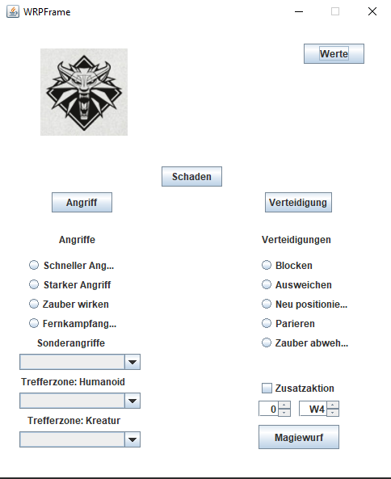

Who am I?
1. Project
My first project began in C with a small program for rolling dice, which was quickly finished by itself. I showed it to my family, cause they wanted to see what I was doing and asked why there is no window for the program. I asked this to myself and thought on. I started learning Java, which is rather simple to learn and gives me possibilities to make simple programs with graphical interfaces like most other programs out there. And it quickly evolved into a program for a pen and paper rollplaying game. This is what it's looking like right now. I am planning to update and enhance it in the near future, but for now it stays like this until I know what I want to improve and have the abilities to do so.
It works rather simple: When you open the program and click on the "Werte"-button a panel opens which asks for different values it needs for calculating.
After they are inserted and you close the program the values are saved and given to the program. Then it comes down to what you want to roll on. There are different attacks and defense techniques which can be chosen from.
When you chose those you wanted and click the appropriate button an extrapanel opens which tells you the results and breaks those results down.